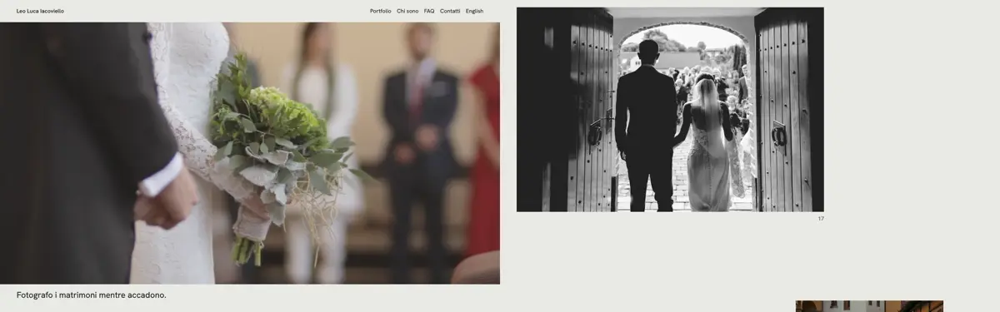
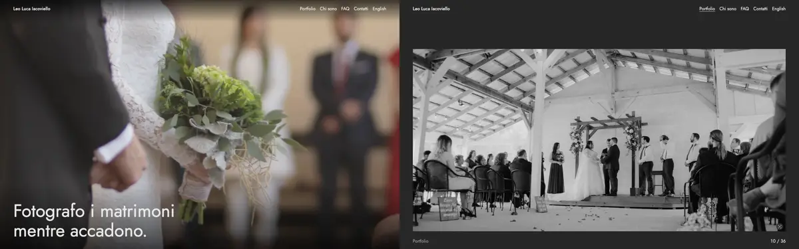
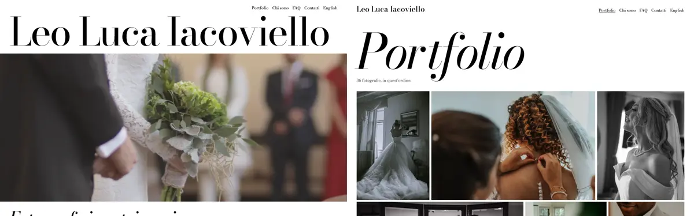

Tre direzioni visive per il sito di Leo
Tre ipotesi su quale sia «la sua faccia», ognuna con home e portfolio. Le tre direzioni differiscono sugli assi che contano: come si scorre il portfolio, la luce della pagina, la voce tipografica.
Stesse 36 foto, stesso ordine, stessa clip, stessi testi: cambia solo il design. Le foto sono segnaposto di reportage prese da Unsplash, non di Leo. Giudicale per come trattano la fotografia, non per le fotografie.

A. Tavole
Il fotolibro. Ogni foto è una tavola impaginata da un editor, con il suo numero nella sequenza.
- Palette
-
- carta #E9EAE5
- inchiostro #262521
- grafite #626159
- velina #DCDDD7
- Caratteri
- Hanken Grotesk, 400 e 500, due sole taglie. Il testo si ritira, parla l'impaginazione.
- Portfolio
- La disposizione dipende da orientamento e posizione: orizzontale grande, media a sinistra o a destra, a pieno campo una ogni quattro, verticale sola alternata, dittico quando due verticali sono consecutive. Molta aria tra una tavola e l'altra.
- A 390 px
- Una colonna con margini alternati. Il dittico resta affiancato.
- A 1440 px
- Griglia a 12 colonne, foto tra 5 e 12 colonne. Le più piccole delle tre.
- Rischio
- Se il ritmo non è curato scade nel tema minimal qualsiasi. L'impaginazione dipende dall'ordine: è un pregio, l'editing di Leo diventa visibile, ma cambiare l'ordine cambia la pagina.
- Spec
- A 390 px il lazy loading nativo di Chrome richiede 6 immagini al primo render invece di 3, perché anticipa di circa 1250 px e le tavole sono basse. Non è specifico di questa direzione: va risolto nell'implementazione.

B. Proiezione
La sala buia. Diapositive proiettate una alla volta, come le vede una giuria su uno schermo grande.
- Palette
-
- sala #262626
- telo #E8E8E5
- penombra #9C9C98
- Caratteri
- Jost, discendente di Futura e lessico dei titoli di testa. Cifre tabulari per il contatore.
- Portfolio
- Una foto per schermo, contenuta alla massima dimensione, scroll snap di prossimità, contatore «12 / 36» fisso in basso. Il contatore è solo visivo: annunciarlo a ogni foto sarebbe rumore.
- A 390 px
- Le verticali riempiono lo schermo, le orizzontali restano piccole, circa 358 × 239 px.
- A 1440 px
- Un'orizzontale arriva a 1344 px di larghezza: la direzione che mostra le foto più grandi.
- Rischio
- Lo snap può infastidire chi scorre veloce. A 150-200 foto sono 150-200 schermi. Il fondo scuro dà a tutto un tono da cinema, anche alle foto luminose.
- Spec
- 3 immagini al primo render a 390 e a 1440 px. Conforme.

C. Manifesto
La copertina di rivista. Il nome come immagine, il lavoro come parete. Il Bodoni nasce a Parma: identità italiana leggibile da una giuria internazionale.
- Palette
-
- bianco #FFFFFF
- nero #000000
- grigio #5E5E5E
- velina #F2F2F2
- Caratteri
- Bodoni Moda con asse ottico, tondo e corsivo, una sola famiglia. Il nome a tutta larghezza.
- Portfolio
- Mosaico a righe giustificate in CSS puro: ogni foto cresce in proporzione al suo rapporto, così le righe hanno tutte la stessa altezza. Righe alte il 42% dello schermo a 1440 px.
- A 390 px
- Nome su due righe. Il mosaico alterna orizzontali sole e coppie di verticali.
- A 1440 px
- Tre foto per riga, vista d'insieme immediata. Home impaginata a coppie grande e piccolo.
- Rischio
- Il nome compete con le foto. Il Bodoni sottile a grandi dimensioni dice moda più che reportage. Il mosaico rimpicciolisce proprio la singola foto che la giuria guarda.
- Spec
- Viola US-2 per costruzione: 6 foto nel primo schermo a 1440 px e 10 richieste al primo render (7 a 390), contro un massimo di 3. Per adottarlo si cambia lo spec, oppure il portfolio prende la meccanica di A o di B e il mosaico resta linguaggio della home.
Cosa vale per tutte e tre
Rispettato, e verificato sul DOM
-
AVIF con ripiego WebP, nessun JPEG.
srcsetda 400 a 2400 px, mai oltre 2400 sul lato lungo.sizes,width,height,decoding="async"e alt in italiano su ogni foto. - Nel portfolio sono
eagersolo le prime tre, in home solo il poster. -
Il poster dell'hero è l'LCP. La clip, 5,9 s, 1,42 MB e senza audio, parte dopo il load. Non si scarica
sotto i 768 px né con
prefers-reduced-motion. - Nessuno scorrimento orizzontale a 320 px. Coppie di colori tutte sopra 4,5:1. Focus visibile.
Non misurato
- LCP, peso fino all'LCP e JavaScript trasferito. Lighthouse CI non è installato, e installarlo sarebbe una dipendenza: i budget si misurano sull'implementazione vera.
Provvisorio
- Motto, raccordo e inviti all'azione: segnaposto nel tono di
05-content.md, da far scrivere a Leo. - Chi sono, FAQ, Contatti ed English non portano da nessuna parte.
- I font arrivano da Google Fonts via CDN. In produzione vanno ospitati in locale.
Cosa guardare
- Ogni pagina a 1440 e a 390 px, con gli strumenti per sviluppatori.
- La stessa foto nelle tre direzioni, per esempio Venezia (19): quanto è grande, quanto spazio ha intorno.
- Quale delle tre reggerebbe le foto di Leo, non queste.
Foto: Unsplash, licenza Unsplash, slug di provenienza in comune/foto.js. Clip: Mixkit 5217,
licenza Mixkit.